Here we discuss the women of Mongolia. How strong, tough, and beautiful they are. We also take a look at how they became that way. For they are who they are because of the strengths and guidance of one singular man; Genghis Khan. As such, we study the environment that forged such strong, fierce and beautiful women.
One of the things that I enjoy about history is looking at it in it’s entirety. That is to say, not just the dates, the places, the battles, and the warriors. But rather the tales of bravery and strife of the people who lived at that time. But, yes, it’s even more than that. You need to understand the culture and society at the time to really obtain a full and accurate impression of what was going on then. Here, in this article, we look at life under the brutal emperor Genghis Khan as a woman. After all, it’s a pretty fascinating subject, don’t you know.
Why women? Well, we pretty much know what it was like as a man; you fought and you died in glorious battle. You died for a man who you admired, and who you looked up to. He was your hero.
Even though Genghis Khan is considered as a bad person in the world due to his brutal activities of killing people; in Mongolia, he was considered as a hero. He brought civilization and law in Mongolia. The leadership of women was very appreciated in his native land. -Genghis Khan Facts
Men also didn’t tend to live long. It’s sort of like it is today, only back then you also had to contend with [1] illnesses without cures, [2] jealous neighbors who will kill you “just because”, [3] accidents without doctors, and [4] the occasional genocide of your entire tribe.
Ah, it was a truly tough life if you were a man.
Not that being a woman was any better, mind you. It’s just that it was a different time with different problems. Women had to deal with the annual baby, while busily keeping the other kids alive. All the time maintaining the household, budgeting the financing, feeding the family and engaging in family-to-family politics that were often at a “Game of Thrones” level.
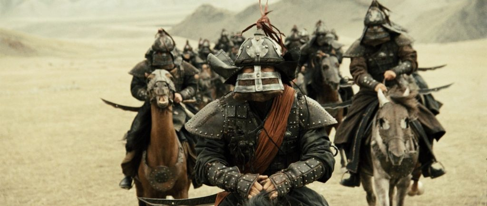
Here we look at the ruler of the largest empire in the world. We look at the man, and the conservative society that he imposed on his people and on the peoples that he conquered.
Traditional Conservative Society
Now one of the things are is often overlooked in the histories of our past is the society from once they were derived. We just “assume” that they were like our present society, only with different clothing, and bad sanitation. Most people assume that it was almost like our present life, just at a different time.
Not true.
These are “traditional” conservative societies. Not “progressive”, modern, and “liberal” societies formed after the industrial revolution to “modernize” it to keep up with changing events and the “scientific method”.
There are two types of societies;
- A traditional society. One that has remained constant for thousands of years.
- A Progressive and modern society. One that is subject to change and alterations to fit the times. The oldest progressive society in the world is the “American Society”. It is slightly over one hundred years old.
Over 5000 years of mankind, families and evolution has created a world-wide template on what a traditional society is. That template is a global standard. The men folk engage in hunting, foraging and farming activities and the wife engages in domestic duties. It’s known as a “traditional”, and “conservative” family.
So, nope, you won’t see a shared division of labor.
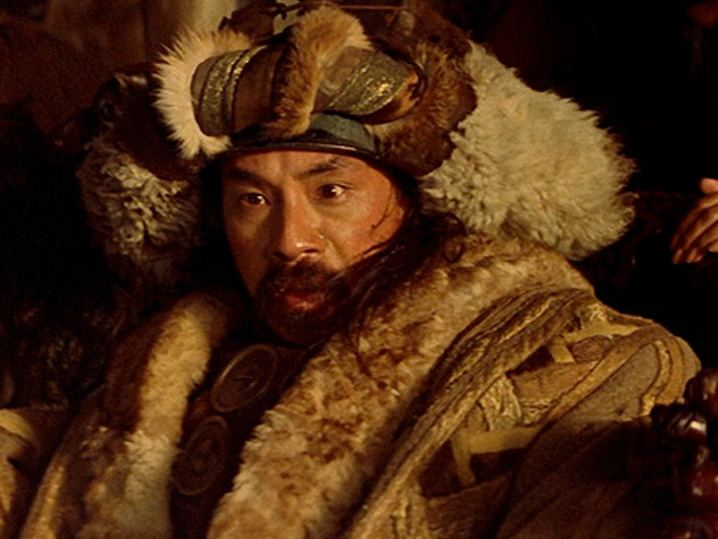
The husband won’t go rushing out the door to ride the horse to McMogel Inc. to clock in, while the wife rides her steed to a nearby village to engage in some urban planning activities. You know, go through the drive-through Yurt to get a Starbucks hot yak milk. It’s not like that. That is a progressive “modern” division of labor for families.
A traditional home is one where the man earnings a place in society for his family, and the woman cares for the home and children. It’s a conservative, and traditional , division of labor.
Now, of course, you the reader, might look askance at me.
It’s not only the division of labor that is different from our modern progressive family lifestyle. It is everything. The man MUST represent the family in the community, hold his own; earn his keep and provide for his family. If he fails, he risks banishment, subjugation, possible slavery and death for him and his family. The stakes are always high in a conservative society.
No slackers are permitted to live in a true conservative society.
(Which is perhaps why the progressive liberals are so Hell-bent on disarming them, in order to achieve their progressive utopia. Eh?)
Traditional Conservative Roles
In a traditional conservative society, there are roles. They are strict. They are easy to understand. They are easy to measure the success or failure of.
- For the man, this might mean herding cattle, farming, fishing, or fighting with the local kingly leader. It’s ok for the man, as it leverages his strengths. (Though, not all that great on the wear and tear on his body.)
- While the wife tends to the house, manages (and teaches) the kids and provides nutritious meals for the family. It’s always been a very comfortable division of labor and responsibilities.
Thus to understand Genghis Khan, and his treatment of women within that society, you need to understand and recognize that it was a different time, and a different place. It in no way resembles life and our societies today.
![Modern American progressives having a discussion on the merits of the improved utopia under Socialist Bernie Sanders. They believe that a true utopia on earth can be obtained through applicaiton of modern techniques and a modern society where everyone is the same. Everyone is equal, and everyone is happy. In theri world view, they would be just as "equal" as the strongest man, the smartest woman, the fastest runner, or the most attractive (or handsome) person. Simply because they intend to legislate it that way. Under Genghis Khan, however, they would be singled out as slackers and killed. *Maybe tortured first, it depends on their mood at the time.)](../assets/img/the-role-of-women-under-the-leadership-of-genghis-khan/forum-of-progressive-for-a-new-world-order-1024x576.jpg)
The modern progressive lifestyle that came into being during the feudal societies of the “middle ages”, as well that their modern manifestation the Wilsonian modern progressive lifestyle had another 600 years before it started to gain in popularity.
The Mongolian culture that we see today, is a result of things that took place many centuries before Wilsonian / Taft, and FDR “progressive modernization” was even conceived.
This all took place at a time when Men were Men, and Women were Women. Everyone had a role. If you did not fit within that role, you were killed. There was no mercy. Abominations were killed.
It’s all pretty straightforward, don’t you know.
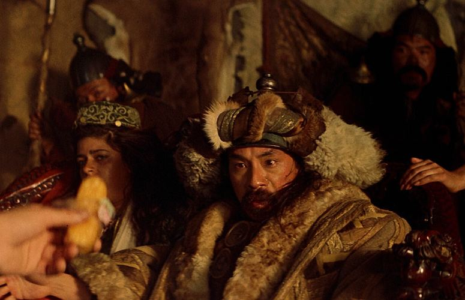
r/K Reproductive Strategy
To understand why the women of Mongolia are strong, tough and equals with men, you must understand the differences in society survival mechanisms. This is known as the r/K reproductive strategy and it affects everything.
- Being equal does not mean a comparative measurement of strength.
- Equality is self-contained independence within a role-defined framework.
To study this further, please click on the link below. Don’t worry as it opens up in another tab so that you can safely continue reading this article.

Genghis Khan’s rough childhood.
Let’s talk a little bit about the boss.
Genghis Khan was the Emperor of the Mongol Empire. He ruled the country from 1206 up to 1227. He was born on Delüün Boldog in 1162. He died at the age of 65 years old in 1227. The legend stated that he would be a good leader when he grew up since he was born with a blood clot in his clenched fist.
When Genghis Khan was just a child, his father Yesugei was poisoned by a rival tribe, the Tatars, when they sneakily offered him poisoned food.
Expert Tip: Don't eat food given to you by your enemies.
Young Genghis, who had been away, immediately went back home to claim his position as chief of the tribe. But once he arrived he discovered that things had changed. Once his father was gone, his family was blacklisted in his tribe. They decided to kick them out of the tribe, and thus ended up abandoning Genghis’ family instead.
Um. Maybe they should of killed him instead. Read Law 15: Crush Your Enemy Totally - The 48 Laws of Power .
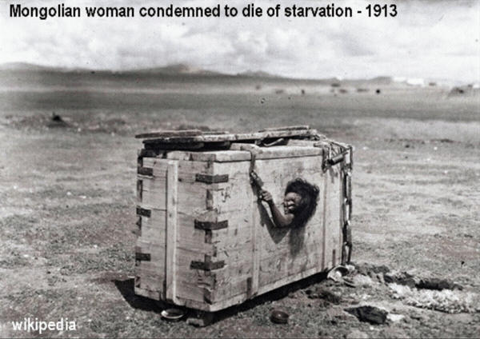
Genghis Khan had a very rough childhood. His father was killed by an enemy tribe when Genghis was only nine years old. Later, Genghis tribe expelled his mother, so the poor lady had to raise Genghis and six other children on her own. Needless to say, Mongolia in the 13th century was not the best place for an unprotected woman with seven children. All of Genghis' family suffered a lot from hunger and cold. That made Genghis a real fighter. He even killed his half-brother Bekhter for not sharing food. Genghis was ten at the time of this dispute. I understand that siblings might be a pain in the rear end sometimes, but killing them is not what normal people do. It was a clear sign that one hell of a cold-blooded warrior was growing up. Later, Genghis was enslaved by a rival clan, and it only made him hate everyone more. Of course, Genghis escaped the slavery, and the rest is history. -The Richest
The troubles still weren’t over for the young Genghis. He also ended up being abducted by an enemy clan as a teenager, and had to make an escape to win his freedom. It was what was expected of him as a Mongol.
So, to clarify. After his father was poisoned, and his family banished from the community. The enemies of the family kidnapped him and used his as a slave. Where, of course, they did not treat him well. So he escaped.
Yeah, I’m sure that kind of background would tend to make anyone a little mean and distrustful.
Warrior Culture If you were born a Mongol, you were a part of the tribe in every facet of its society. This is evident in the fact that the Mongols did not have a word for soldier, as every member of their society was trained to be a part of their collective war-machine, each of them learning to mobilize instantly. -Factinate
Genghis Khan as a young leader.
He had to work his way up from rock bottom.
He clawed, fought, betrayed, and horrified his enemies. He used his diplomatic skills to build friendships and alliances, and his knowledge of terror and warfare to vanquish his enemies.
In an environment that bred hard men, Genghis was the hardest of them all. Born in 1162 (according to McLynn; other estimates vary from 1155 to 1167), by the age of 14 he had killed his half-brother (and potential rival) in an argument over a fish and had seized back his family’s horses, stolen in a raid.
He married at 16, and when a competing clan abducted and impregnated his wife Borte he assembled a large army to rescue her.
In 1206 he survived a poisoned arrow in his neck, and as reward for a brutally effective military career, a noble council (quriltai) of the Mongolian clans proclaimed Temujin their leader, or ‘Genghis [Chinggis] Khan’ — often translated as ‘Ruler of the Universe’.
But at that point he was just warming up.
He reformed his army, the instrument of conquest, along Manchurian lines in decimal units: ten in a platoon, 100 in a company, 1,000 in a brigade and 10,000 in a division. Their pay was plunder.
The wily Genghis also created a 10,000-strong imperial guard, making the sons of his generals officers in order to guarantee ‘good behaviour’. He unleashed this vast army of over 100,000 across Asia.
McLynn has subtitled his book ‘The Man Who Conquered the World’, but he might have added ‘and Slaughtered Half of It’.
First Genghis subjugated — later all but annihilated — the Tanguts of north-western China, before invading China’s powerful Jin empire in 1211. ‘Like a shark, the Mongol empire had to be in continuous forward motion’ to sustain itself.
By 1213 he was in Peking. The image of Mongolian warriors as fierce horsemen sweeping across the steppe is accurate, but incomplete. When confronted by the truly formidable defences of Peking, Genghis demonstrated great patience and resolve, starving the city into submission in 1215.
The inevitable resulting sack ‘was one of the most seismic and traumatic events in Chinese history’.
- Was Genghis Khan the cruellest man who ever lived?
He set his self apart by combining skillful leadership in diplomacy and battle. Around 1206, the great assembly of Mongals named him “Genghis Khan” or supreme leader. Khan then proceeded to unite his people together.
The Mongols swift rise to power came from Khan’s dynamic leadership.
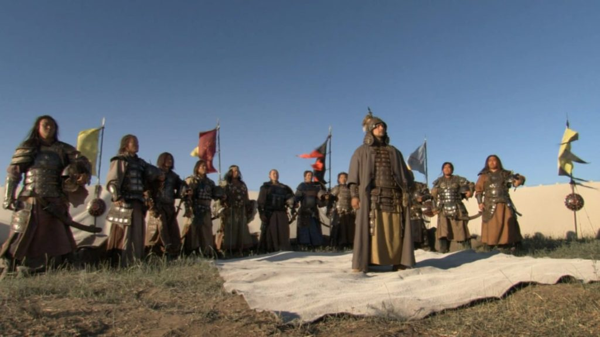
While the Mongol tribes had long renowned as dangerous and troublesome, Khan molded them into a much greater fighting force-disciplined organized, ruthless. He picked his generals from among his sons or trusted allies; he was also an adaptable ruler, and had the ability to learn from other.
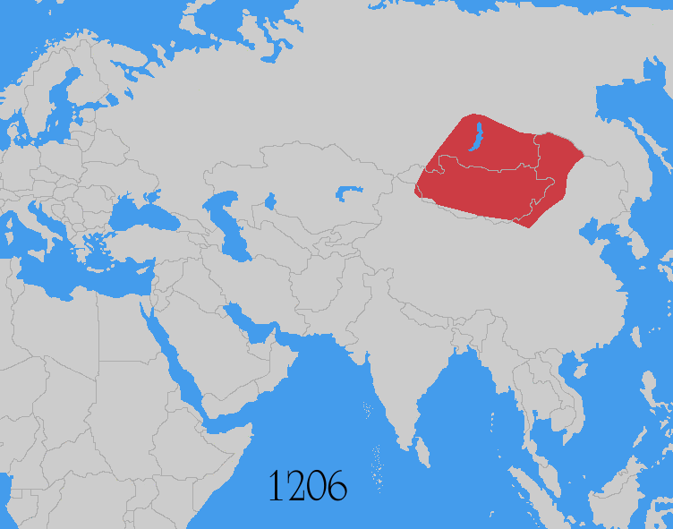
He must have been one of the most ferocious people ever to live on the planet Earth. Genghis marked his reign with blood, feasts, and love of different women. People like Napoleon, Hitler, or Stalin look like amateurs when we compare them to Genghis Khan.
The killed people by the armies of Khan are more than the ones killed by Adolf Hitler and Joseph Stalin. It is estimated that army had killed 40 million people. -My Interesting Facts
Fierce Leadership.
This fierce Mongol knew how to rule, and he successfully did it for many years in the 13th century. There wasn’t a person back in the day, who would not be scared of Genghis Khan’s power. The Mongol Empire conquered all Asia, and no enemy could withstand Genghis Khan and his bloodthirsty army.
Genghis Khan killed so many Persians (modern day Iranians), that the population of Persia didn’t return to pre-Mongol numbers until the 1900s, nearly 700 years later. -Factinate
Using his armies, he pushed outward and forward. He went forth and conquered anything in his path. Many cities and nations fell before his armies.
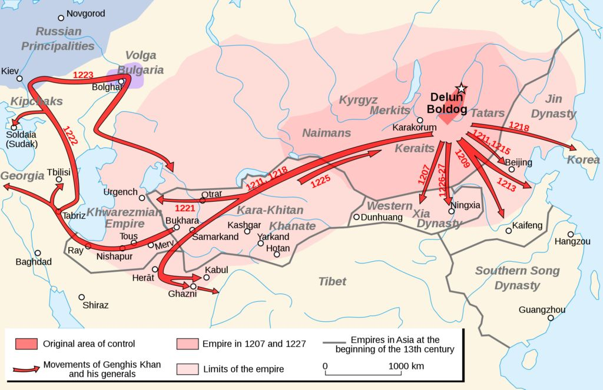
While the Mongols loved to compromise, they were known for their brutal physical power.
From there his armies moved west and targeted Persia in 1219, where the Sultan had, in an act of extreme foolhardiness, deliberately provoked Genghis by shaving off the beards of two of his ambassadors and killing a third. Samarkand, that glorious city on the Silk Road, fell in 1220, despite the defenders’ super-weapon of two dozen war elephants. McLynn dismisses the oft-quoted figure of 50,000 killed there in a single day (note the limited time span), but admits ‘it is clear that the death toll was terrific and unacceptable’. - Was Genghis Khan the cruellest man who ever lived?
People believed that one Mongolian man could defeat ten or more warriors of other culture. And that was true.
Genghis Khan proved many times how strong his army was, defeating his enemies against all the odds.
- 10 Reasons Why The Mongols Were So Feared
- Was Genghis Khan the cruellest man who ever lived?
- How Barbaric Were The Mongols?
Fighting was part of the Mongol culture. As such, Genghis loved to fight more than anything else.
Most military historians judge that no European force could have stopped the disciplined and innovative Mongolian armies. “Employed against the Mongol invaders of Europe, knightly warfare failed even more disastrously for the Poles at Legnica and the Hungarians at Mohi in 1241” -Stephen Hicks
That being said, he did a lot of other things in his life as well. It is strange how little we know about Genghis Khan, the greatest Emperor of all time. And he was. His empire was enormous.
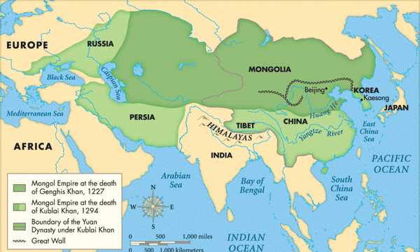
Genghis Khan amassed the largest contiguous empire the world had yet seen. Only the British Empire, when it included both Canada and Australia, would be larger. Unlike Alexander the great, the Caesars or the Persian emperors, Genghis Khan’s idea of conquest was not to occupy and rule another people, but rather to rape, pillage and destroy everything in his path.
Worse was to come in 1221 — ‘a year to live in infamy’. While Genghis’s other armies had been busy in the east, threatening Tbilisi in Georgia and terrifying the Christian world, Tolui, one of Genghis’s equally reprehensible sons, took Merv (in modern-day Turkmenistan), one of the largest cities in the world. Promised safety, the citizens surrendered and emerged from behind their walls. Tolui ‘surveyed the masses dolefully gathered with their possessions, mounted a golden chair and ordered mass executions to commence’. They took four days and nights to complete. Genghis’s rotten fruit did not fall far from the tree. Terror — and the certainty of its visitation — was a major weapon in Genghis’s arsenal: decapitated women, children and even cats and dogs were reputedly displayed. But while the butchery was indeed immense, it is worth questioning its extent on occasion: a depopulated city had little economic value, and imported colonisers could make up only so much of the shortfall. - Was Genghis Khan the cruellest man who ever lived?
His total disregard for human life led to him being utterly feared throughout virtually the entire Eurasian land mass.
And, aside from that, they also were terrible at keeping promises…
Subutai led an army of 20,000 Mongols against a Russian army 4 times its size. The Mongol rear guard was defeated early in the battle, and so the rest of the horde was forced to retreat. Mstislav the Bold chased down the retreating Mongols with victory in his eyes. His army spread out as they attempted to catch them, a chase which lasted many days. Mstislav spotted Mongols in formation along the Kalka River, and attacked without waiting for reinforcements. With his army in disarray, Mstislav was forced to retreat back to a fortified camp. He had fallen for a feigned retreat. Mstislave surrendered to Subutai with the agreement that neither he, nor any of his men would be harmed. They were all slaughtered upon leaving the camp. Luckily, Mstislav managed to escape. Mstislav the Bold, boldly ran away. -ESKify
Being a woman under Genghis Khan.
When people think of strong women, their first reaction is (perhaps) some kind of cardboard-cutout out of Hollywood. They think of a woman acting like a man, dressing like a man, taking on manly battles and killing other men.
Maybe something like this…
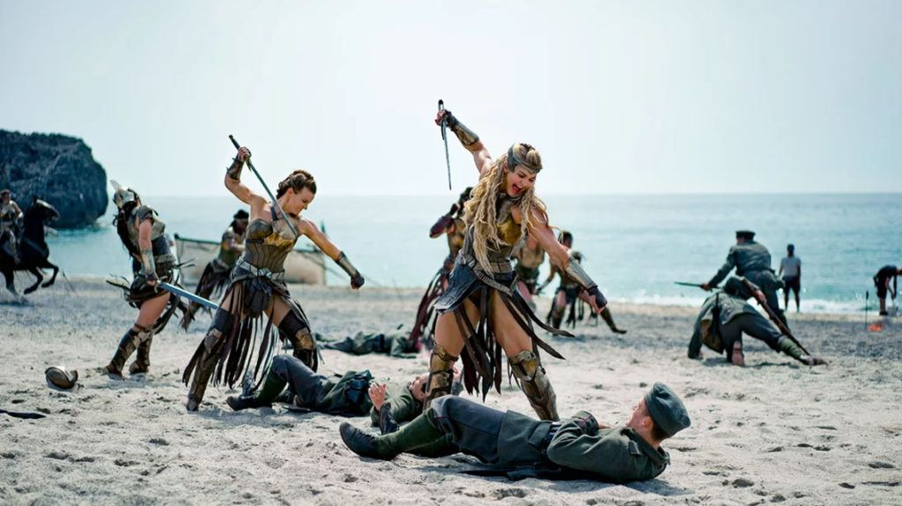
If you’ve ever actually stopped to think about it, you probably assumed that life was pretty terrible for women under Genghis Khan. And you’d be forgiven for making that assumption. But it’s not true at all.
Most cultures that existed in the distant past have a not-exactly great reputation for treating women with respect and fairness. Thus, why would you think that a dictator of a traditional conservative nomadic society, and one as brutal as Genghis Khan, would be any different?
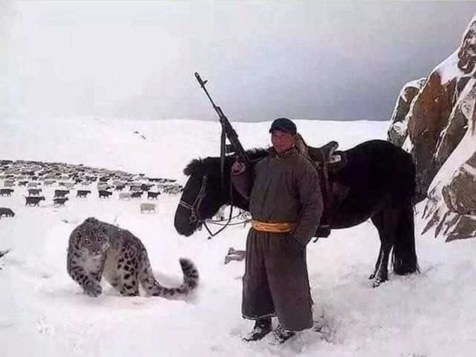
Most of what you’re about to read will probably be kind of surprising (it will certainly shake many assumptions that one might have regarding traditional conservatism, the role of women in these cultures and societies, and assumptions written down in school textbooks over the last few decades).
The truth is kind of a mixed bag.
Some women fared very well under Genghis Khan while others suffered terribly. But for the most part, the Mongols had some pretty progressive ideas about women’s rights, at least compared to many of the other cultures that existed at the time — Western culture included.
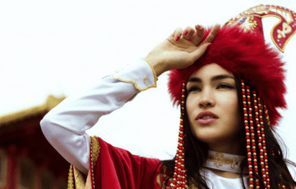
They still had to fit into neatly outlined roles and meet certain expectations, it’s just that they enjoyed a lot of freedom compared to women in other nations around the world.
So here is the truth about it was really like to be female under the reign of the infamous Mongolian conqueror. More or less.
This was one of the most devastating battles in European history. 25% of Hungary’s population was wiped out by after the Mongol incursions. Half of all liveable places had crumbled, smashed to bits by hordes of Mongols. Losses were heavy on both sides, but the Europeans suffered most. This was the most major battle of the war between Hungary and the Mongolians. -ESKify
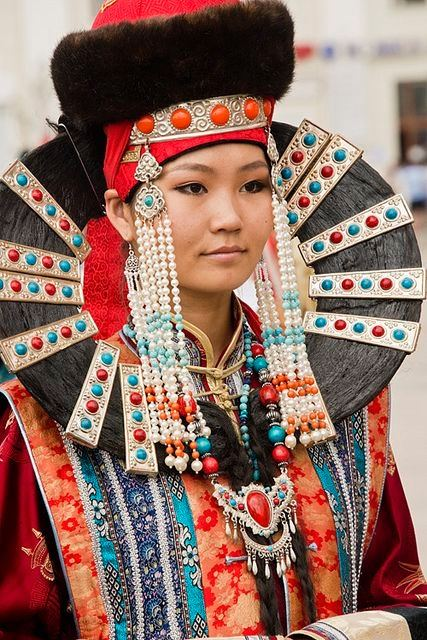
The husband had to obey his wife.
This will shock many people. As it does not fit the narrative of what a traditional conservative family is like. If you listen to the progressive anti-traditional narrative, you would believe that all conservatives have a lifestyle right out of the Handmaids Tale.

But there you have it. One hundred years of progressive Marxism has rewritten the narrative to such a point that people become incredulous when exposed to the truth.
In conservative societies, the woman is the boss of the household. Households are run as matriarchal institutions with a paternal head for sociological hierarchy.
Back under Genghis Khan, the women were actually respected in Mongol society. Not only that, but men were expected to listen to the advice of their wives.
Khan believed that the children that he left behind were his strength. Therefore, he had a lot of women in his harem. When he died, he had a lot of children. -My Interesting Facts
The Mongols were brutal fighters, to be sure, but they weren’t barbarians, well at least not in every aspect of their lives. Mongolian women were respected, often served as leaders, and were highly valued members of society.
Check out the very cool Mongolian headdresses. One of the most colorful and original items of Mongolian national dress is the traditional head wear. The Mongolian headdresses differs in shape and purpose.
In fact according to Amonbe, the Mongols believed that a man ought to marry an older woman, because an older woman would have more wisdom than her husband, and would therefore be able to guide him in not making stupid life decisions.
Well, duh! That’s the way it is today in all the traditional conservative societies around the globe. From Poland, Brazil, to Japan, Korea and China.
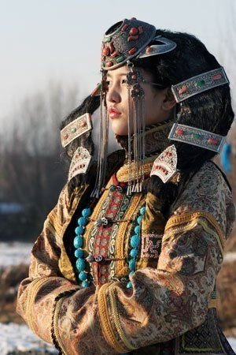
In fact, no one respected a man who didn’t listen to his wife — it was a sign of immaturity and unmanliness. So just in case you thought that fierce Mongol warrior must also be a brute to the women in his life, well, you’re mistaken.
Genghis Khan was one of the most deeply feared historical figures in the world for a good reason. Historians estimate that Genghis Khan is responsible for over 40 million deaths, and at that time it was equal to 11 percent of the world's population. For comparison, we can look at World War II, which has put "only" around three percent of the world's population, 60-80 million people, to the graveyard. What Genghis Khan did is downright scary when we put it in perspective, right? Actually, Genghis Khan's killings are partially responsible for making the climate colder in the 13th century and removing over 700 million tons of CO2 from the planet Earth. If Genghis Khan were alive today, we would not have to talk about global warming... but we would have to hide if we were not Mongolians. Good thing that even the most powerful cannot resurrect from the dead. -The Richest
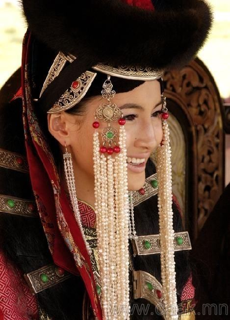
Genghis Khan’s courts could tell your husband to be more romantic
When you imagine those early historical relationships between men and women, you probably think about some unsavory things. After all, we all harbor images of cavemen dragging cavewomen around by the hair. At least this is what we are taught in the common American mainstream media. Hey! Anyone else remember the cartoon “The Flintstones”?
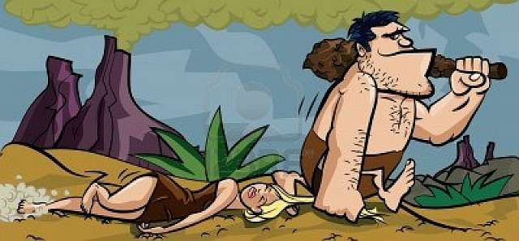
Throughout history, an awful lot of women got abused by an awful lot of men. But do not think that the majority of cultures were based on this model. They weren’t. If they were, then we would not have societies like we do today. Instead we would have a caste system.
It would be a caste system defined by gender. Where the strongest physically (the men) would subjugate the weaker sex (the women). This would manifest in numerous ways. One of which would be shared communal families, and roving sexual partners, and a society where the women would be more inclined to look good rather than have babies.
It would be a r-reproductive society.
But we know that is not the case, historically at least. Most of the world operates under a K-survival model. It is only in the progressive modern West, where the r-strategy model has taken root.
Thus I find it interesting that r-strategy progressive modern societies promote the notion of a helpless little-waif female, when in reality women are anything BUT helpless.
I knew a guy who stole a friends' wallet. He carried on and on about how the friend needed the money and that everyone should go looking for the wallet. It is the people who shout loudest about things are usually the ones that are broadcasting their failings, worries, fears, and socially inept behaviors.
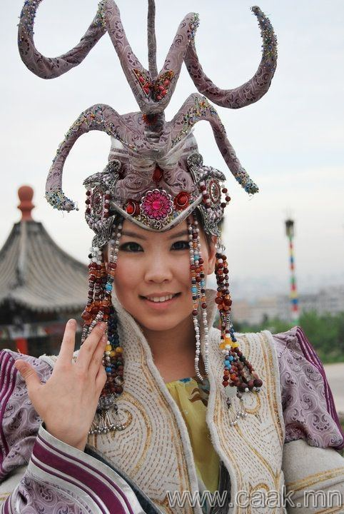
Mongol women had a lot of control in the home and in the bedroom, too.
In fact, if you were a Mongol woman and your husband wasn’t up to performing his husbandly bedroom duties (having sex on a regular basis, communicating with the wife, and performing his duties in support of the household) you could actually petition the government to intervene.
Imagine going down to the local courthouse and presenting documented evidence of your husband’s romantic failings. There, a community tribunal of other leaders (cut from the same cloth as Genghis Khan, no doubt) would study the issue and demand the man to perform. If he failed, who knows what nasty consequence might await him.
In Mongolian society, there are reasons why the women smile so much.
Genghis Khan believed a man’s legacy was measured in the children he left behind. That explains the why of the previous fact, but not the how. Who has that much time? Conquering must be easier than it sounds. -Factinate
It is a man’s duty to perform. Both inside and outside the house. Anything less than that is an insult to Mongolians everywhere.
No foot binding in Mongolia.
Meanwhile in China, south of the Mongol empire, Neo-Confucianism outlined strict rules for female behavior. For instance, women were supposed to be chaste and obedient. This was often taken to the extreme. Where wives should basically exist only to serve their husbands. Well, except when their husbands die. Then they must exist only to serve their husbands’ families because they weren’t supposed to remarry.
Well, the truth is it’s not nearly as bad as all that.
I can’t imagine any Chinese women that I know tolerating that kind of harsh existence. Though, the point is that the Mongolians were far more accepting of parity of strengths between the two sexes. They felt that both the women and the men were equally strong.
Only in different ways.

In China, women in the upper classes had their feet bound starting at age six, because a three-inch foot made them a hot item, a four-inch foot made them a good consolation prize, and a five-inch foot … well, women with five-inch feet might as well start on that collection of cats now because spinsterhood is calling.
In Mongolia, women were not having any of that.
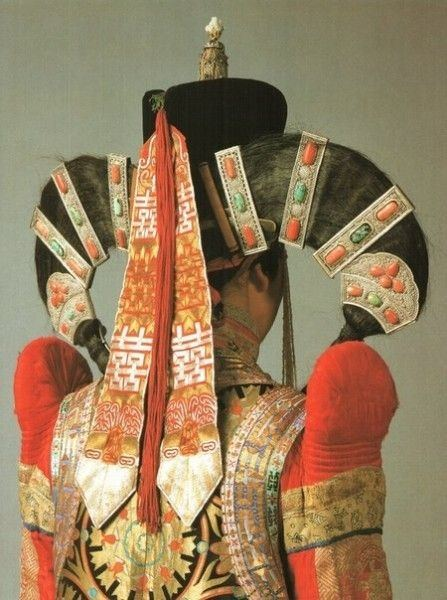
According to Amonbe, Mongolian women were tough — they raced horses, they fought in battle, and there was always a women-only round in the archery competitions.
So Mongolian women were basically just super-extra awesome and badass and they did not especially want to have tiny feet. Mongolian women were not thought of as subservient trophy wives, either — they were expected to be strong, fierce, and hard-working.
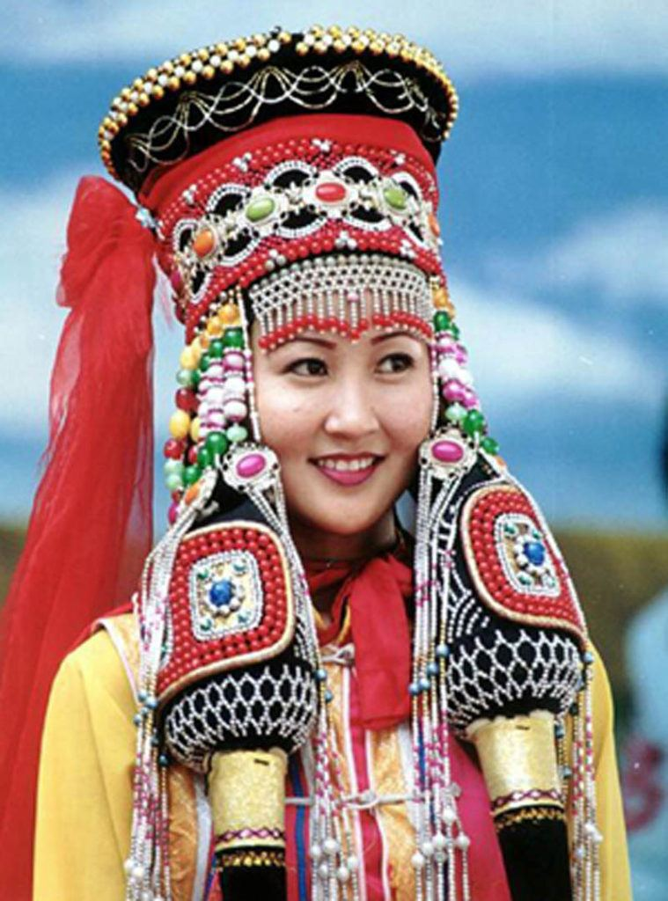
And when cultures place those kinds of expectations on women, that tends to inform the family dynamic. Women who are strong and fierce can’t also be complacent and subservient.
You would probably call me crazy if I told you that Temüjin is one of the best-known people in history. However, that is true. You see, Genghis Khan's real name was actually Temüjin, which means “of iron” or “blacksmith.” It is a cool name, but definitely not for a warlord and emperor. So, Temüjin changed his name to Genghis Khan in 1206. It is for sure that "Khan" is the title, meaning "ruler," but historians are still puzzled about the meaning of "Genghis." Some believe that it translates to English as "ocean," but the more common version is that "Genghis" is a transformation of the Chinese word "Zhèng," which means "right" and "just." So, ironically Genghis Khan is translated as “the just ruler." If you ask me, the 13th century was a very dark place to live in if people called Genghis Khan, killer of 40 million innocent souls, a just and right person. -The Richest
Please kindly note that this post has multiple embedded videos. It is important to view them. If they fail to load, all you need to do is to reload your browser.
▶ Media file: @5b1f8ac4f81a0b7c4b61ce3e2bdc2bca-1.mp4
Under Genghis Khan, women were the cartmasters
For a nomadic people, their homes were mobile. They mounted them on wheeled houses.
Incursions into Southeast Asia were largely successful, most factions agreed to pay tribute, and only the Invasions into Vietnam and Java failed. Europe was devastated by the Mongols. They destroyed near enough every major Russian city, and invaded Volga Bulgaria, Bulgaria, Poland, and Hungary. If rumours spread that the Mongols were coming, then it would cause a mass panic, and some would run to safety. There was no guaranteed way to defeat the Mongol hordes, they continuously defeated much larger armies, so numerical strength couldn’t protect you. Mongol conquests would leave once populous and flourishing areas as wastelands, with little to no people, those remaining would be slaves. -ESKify

Imagine if you were the person in charge of driving and maintaining the family car and also, you could make all your male family members walk. You are in charge. Well, the Mongols mostly rode horses, but you get the idea.
In Mongolia during the time of Genghis Khan, the women were in charge of the carts and the men were strictly not allowed to ride in them, unless they were sick. And, for a Mongolian, it would have to be a pretty serious illness. I’ll tell you what.
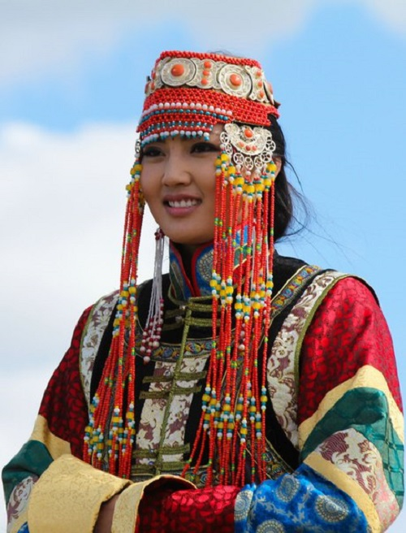
That probably had more to do with the fact that Mongol men were supposed to be excellent horsemen (so they could be excellent warriors and pillagers) and riding in a cart took precious hours away from equestrian practice, but anyway. The carts were the domain of the women, and no men allowed.
Mongolian carts weren’t just a way to go back and forth to the grocery store, either, they were one of the most important components of the nomadic lifestyle.
▶ Media file: 66b87498f7586c6c0ea4917f0378048f.mp4
According to the San Diego Tribune, the carts carried the felt tents that the Mongols lived in, and most of their goods and supplies, too. So if the cart drivers decided to go on strike, well, the whole community was in trouble.
Just another great example of “happy wife, happy life.”
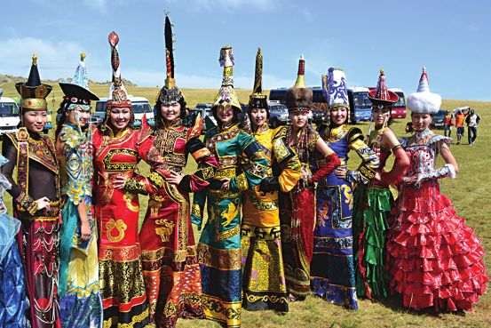
Genghis Khan was the most feared human of the 13th century, who could destroy dynasties just by moving his little finger. He created the Mongol Empire all by himself and earned his eternal spot in the history books. However, a lot of people had to suffer for Genghis Khan to succeed. Oh yes, the Mongolians were known for their horrendous torturing techniques. One of the most popular was pouring molten silver down the throat and ears of a victim. Genghis Khan also liked bending his enemy's back until the backbone snapped. If that sounds barbaric, skip this next part. So, the Mongols once celebrated victory over Russians in a very bizarre way. They picked all the Russian survivors, dropped them on the ground and put a heavy wooden gate on top of them. Then, Genghis Khan and the entire Mongol army had a huge banquet on that wooden gate. They ate, drank, and watched how Russians were dying one by one from the suffocation, pressure, and wounds. -The Richest
Women were expected to do physically demanding tasks
In a nomadic society, you can’t afford to have slackers. There’s just too much work to be done. So that means it there’s no room for anyone who can’t make him or herself useful, women and children included.
Genghis Khan believed in being rewarded for hard work, and operated on a meritocracy over a nepotistic system. Many of his highest ranking officers and generals had earned their way to those positions, instead of simply being born to a particular family. -Factinate
According to the University of Victoria, Mongolian women were not only expected to shoulder a lot of the responsibility, they were also expected to do a lot of the heavy lifting.
- It was the womens’ job to take down and put up the tents, and they had to do it quickly and efficiently.
- They were also expected to be able to control the tribes’ often vast herds of animals, and do all that stereotypical women stuff, too, like raising the kids and cooking a meal every night.
- So women, as well as men, had the responsibility of doing the sort of work that today we’d probably call heavy manual labor.
It’s really not surprising, then, that Mongolian men had so much respect for women — it’s hard to disrespect someone who’s as hard-working and capable as you are, especially if you’re seeing it with your own eyes every single day.
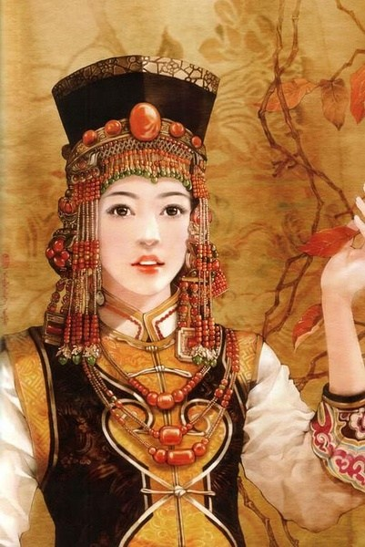
Women often faced hardship and handled it with grace and fortitude, too. Genghis Khan’s own mother was forced to raise her children on game and wild roots because they’d been abandoned by her tribe after the death of her husband.
That upbringing probably had a lot to do with Genghis’ progressive ideas about women.
Genghis Khan created the first international postal service, allowing people to mail parcels and letters to friends and family in other countries without having to hire specialized couriers. The postal service was similar to the American Pony Express. -Factinate
If Genghis Khan says “marry my daughter,” you should totally do it
“The greatest joy for a man is to defeat his enemies, to drive them before him, to take all they possess, to see those they love in tears, to ride their horses, and to hold their wives and daughters in his arms.” -Genghis Khan.
Genghis Khan had four poorly behaved sons, but most of his children were girls. And by most historical accounts, Genghis appears to have valued his daughters just as much as he valued his sons.
In fact, the San Diego Tribune says he once killed a guy who turned down his daughter’s hand in marriage, so yeah. Saying “no” to Genghis Khan was a terrible idea, but it was maybe an even worse idea to say “no” to one of his daughters.
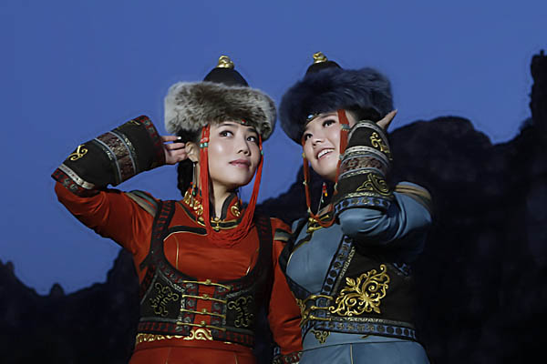
Genghis was fond of quoting a proverb at his daughters’ weddings: “If a two-shaft cart breaks the second shaft, the ox cannot pull it. If a two-wheel cart breaks the second wheel, it cannot move.”
If you’re not good at metaphors, understand that Genghis was basically saying that men and women are two essential parts of the cosmic puzzle — without one part, the whole can’t function.
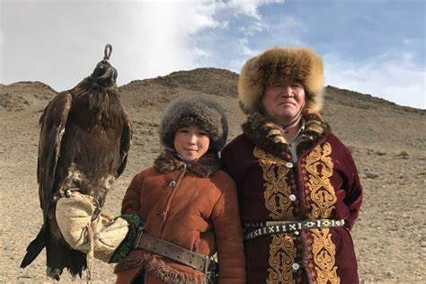
Of course afterward, he would send the groom off to die on some dangerous military mission in the middle of nowhere, but whatever. It’s what happens to the menfolk. Anyways, it’s a nice thought.
Genghis Khan was tolerant of individual beliefs, encouraging religious freedom amongst his subjects. It didn’t matter who you believed in, because Genghis Khan believed in you. -Factinate
Marrying one of Genghis Khan’s daughters was maybe a sentence of death
Genghis Khan loved his daughters, but he also pretty clearly loved what they could do for him politically. In fact, he was actually quite clever in arranging marriages for his daughters.
The Mongol were masterful at spreading fear and hate throughout Asia, people feared them, and therefore hated them. They would rape and pillage entire villages, and torture their victims for fun. Nobles would get it the worst. Spilling noble blood was considered a crime, so they simply crushed them to death, which took many hours. Mongols would literally dine on top of them, making merry to the sounds of their screams from underneath. The sounds of bodies squelching, and bones snapping didn’t faze them. But rumours of this execution method struck terror. Fear made them powerful, as people often chose to surrender and pay tribute rather than risk fighting them. -ESKify
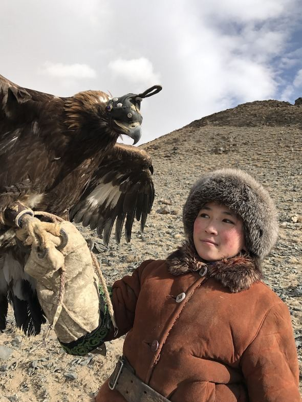
Now it’s worth noting that women in Mongol society had the right to refuse marriage if it was to a man they disliked, and that alone was pretty progressive for a society that existed 800 years ago.
Yet for the daughters of Genghis, though, it almost didn’t matter whether or not they disliked their new husband, because they weren’t likely to stay married to him for very long.
According to the Tyee, Genghis would typically choose a royal husband for his daughters, preferably a king from a friendly nation. If the king had other wives, they got the boot, so let's just backpedal a little and say that life was pretty okay for most women living in Genghis Khan's empire but not really for the wives of the kings who actually got along with him.
Anyway, that sucked for the king’s former wives but it kind of actually also sucked for the king, because Genghis would always send his daughters’ new husbands off immediately on some dangerous mission in a Mongol war zone, where he’d almost certainly be killed. Then, Genghis’ daughter would take over the kingdom, thus expanding her father’s already massive empire.
Pretty brilliant, eh?
Here daughter; how would you like France? You’ll need to marry the King, but don’t worry, after a month, I’m going to ship him off to Siberia for a few years to test his loyalty. What do ya say? You want to marry him?
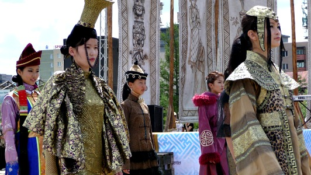
Yelu Chucai, one of Genghis Khan’s most trusted advisors, suggested that the Khan tax people instead of just, you know, killing them. This became a cornerstone of Genghis’ conquests. Genghis Khan was a brutal warlord, but also a generous ruler. He was among the first global leaders to exempt the clergy and the poor from taxation. -Factinate
Life under Genghis Khan wasn’t great for everyone, though
Living peacefully under Genghis Khan was cool, but what if you were a woman in one of his conquered nations? Well, it wasn’t much different from being a woman in a war zone pretty much anywhere else during that time.
Women, gold, horses, and other objects were considered spoils of war, which meant soldiers got to do pretty much whatever they wanted to do with them, and you don’t have to stretch your imagination too much to figure out what that means.
Genghis Khan had so much power that he could do whatever he wanted. For instance, when Genghis occupied some new area, he would kill or enslave all the men and share all the women amongst his tribe. Genghis Khan would even make beauty contests of captured women to decide which woman is the most beautiful one. Yeah, he was having his Miss Universe competition before it was cool. So, the queen of those beauty competitions would win the privilege to become one of many Genghis Khan's women. Rest of the Mongolian army would share all the other contestants. -The Richest
On the other hand, if you were lucky enough to be super-extra beautiful, you could be forcibly entered into one of Genghis Khan’s weird beauty pageants.
Girls in Mongolia seem to be a mystery to all but those who have visited these rare lands. These unique girls offer Asian features with larger bodies than most expect. I was baffled by the women I encountered in Mongolia. I’d never seen such tall, curvy Asians (well, Indonesian girls are curvy) in all of my travels throughout the region. There was truly something different about the Mongolian girls. After meeting, greeting, and mating with some of these fine specimens, it finally clicked – these gals were direct descendants of Genghis Khan. I was balls deep in warrior genes, and I can’t lie – the thought of having myself a warrior-blooded baby certainly went through my mind. -Life around Asia
According to Ancient Origins, once Genghis’ soldiers were done with the pillaging and the abusing, they brought Genghis himself the most beautiful women they’d encountered.
These women alone would be spared from the antics of the conquering army so they could be paraded in front of the man himself. The winner got the honor of becoming one of Genghis Khan’s many wives, which was probably preferable to ending up as the loser, though Ancient Origins doesn’t say what happened to them.
First and foremost, these girls were definitely Asian. Their features were dainty and stunning. However, Mongolian girls did not remind me of Thai girls or Indonesian girls much. They seemed to have a unique mixture to them. I’d say many of the girls looked maybe 75% Asian with a mixture of Slavic genes, too. It was incredibly unique and quite sexy. Some guys said they weren’t too into the look, but I loved it! Think a girl who is 2/3rds Asian and a third Russian. How could that not be sexy?! -Life around Asia
Evidently, though, women who Genghis deemed not to be up to his standards of beauty were sent off with the soldiers to be abused and then discarded. So yeah, great to be a woman in peacetime Mongolia but when Genghis comes to town you might just want to emigrate to China.
0.5 Percent of all men alive today are believed to have a genetic relation with Genghis Khan. It is estimated that his descendants are 8 percent of men in Asia. -My Interesting Facts
Genghis Khan liked to romance his enemies’ wives
Genghis Khan wasn’t an especially gracious winner — after he was done with the conquering, he enjoyed abducting his enemies’ wives and either romancing them or brutalizing them, depending on how cool they were with being abducted by Genghis Khan.
In fact in one of his most famous quotes he waxed poetic about the joys of the post-conquering aftermath:
"The greatest pleasure is to vanquish your enemies and chase them before you, to rob them of their wealth and see those dear to them bathed in tears, to ride their horses and clasp to your bosom their wives and daughters."
Nice guy, that Genghis.
He wasn’t always content to romance just one woman at a time, either.
According to Ancient Origins, his army commanders were all super-impressed with his manliness because he frequently spent his evenings with multiple women.
While broad shoulders aren’t exactly a good trait on women, the women in Mongolia didn’t get the short end of the stick in other ways. In fact, I found some of the biggest Asian tits in the world to be in Mongolia. It was fantastic for me, as I’m a boobs man! There are a number of rain-thin Mongolian girls that have big, natural racks. I was thoroughly impressed. In fact, outside of Indonesia, I haven’t seen bigger tits in an Asian country. The asses here aren’t as amazing as the boobs, but there still above average for Asia. -Life around Asia
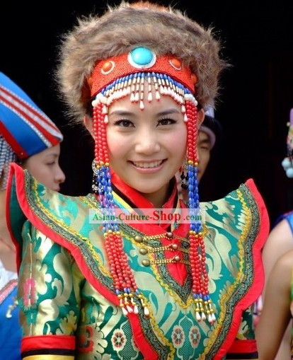
He wasn’t that into birth control, either, in fact by modern estimates Genghis Khan has roughly 16 million descendants. Now, the study that put forth this hypothesis can’t actually prove that the individual they identified is Genghis Khan, since no one knows where the Mongol leader is buried and therefore they can’t recover any of his DNA.
But this person lived roughly 1,000 years ago in the Mongol Empire and must have had access to a lot of women, and there really aren’t that many people from history that fit that description, so the assumption is pretty sound.
When we look at what Genghis Khan achieved with the Mongol Empire, we cannot help but appreciate his mastermind as a warlord. It surely looks like Genghis Khan had three dragons with him just like Khaleesi. I cannot find any other explanation of Genghis Khan's success. I mean, he defeated Jin Dynasty's one million troops with only 90,000 Mongolians by his side. Yes, Genghis Khan managed to win a war with ten times fewer troops than his opponent's army. On top of that, he was invading China, so he had to overcome all the "little" problems such as the Great Wall of China. Genghis Khan with his army had destroyed over 500,000 of Chinese troop before getting control of Northern China and Beijing. The rest of the Chinese army had to surrender to the power of Genghis Khan. Destroying Jin Dynasty is only one of many examples of how great of a warlord Genghis Khan was. Also, he had some brutal and loyal men by his side, and let’s not rule out the dragon theory. -The Richest
Mrs. Khan got to have a bunch of sister-wives
There was no such thing as monogamy in Genghis Khan’s Mongolia. Men could have multiple wives, but each one would have her own tent where she’d live with her own children, so it’s not like the wives had to hang out and pretend to like each other or anything.
So a man with four wives would travel with his four wives. Each one driving forth a wagon with their housing “kit” and their kids tagging along. When the boys are three, they might be tied to a horse and ride along. So it would appear like a small caravan was moving forward. The man at the lead, and his numerous families tailing along behind.
According to History on the Net, though, the whole family usually got along pretty well. The idea of jealousy and a need for monogamy are constructs of a modern progressive society. In those days, where warfare, social strife (killings, murders, poisonings, and accidents) often killed the males in society, it was important to maintain large flexible family units. Ones that can band together if things go South quickly.
There is strength in numbers. In today's modern progressive society where we all stare into our portable electronic devices, we feel that we do not need others. That we can survive alone, with maybe our dog or cat as companions. Maybe so. Though, personally I disagree. We need each other and the larger a family is, the stronger it can be.
A man’s first wife was considered his legal wife, so that made things somewhat less complicated from an inheritance perspective.
The children of the first wife got more of his booty when he died, which is a pretty handy rule for a guy like Genghis who had 500 wives and so many children that he probably couldn’t even remember all of their names.
Imagine what his last will and testament would have looked like if he’d had to divide his fortune up equally among them.
"To that one wife who lives on the corner of Mare and Main, you know, the one with the mole on her left ankle who makes a pretty good Mongolian beef and broccoli stir fry but whose name I can't actually remember, I bequeath this one gold coin which is literally all I can afford to give her considering that I have to divide my fortune up equally between like 15,000 people."
Yeah, that never would have worked.
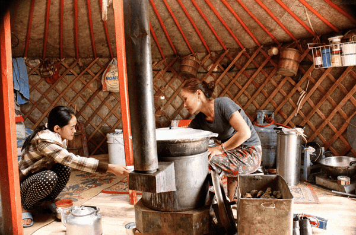
Physical force is not enough to achieve something as great as Genghis Khan did. Yes, there is no doubt that he is the greatest and most brutal warlord in history, but he was also a very wise man. In 1201, during a battle, Genghis Khan was shot by an enemy archer. Needless to say, he was not happy about it. So, after the Mongolian army won the battle, Genghis Khan spent some time looking for the man that shot him. He even pretended that it was not him who got shot, but his horse, so the enemy archer would have the courage to confront Genghis. An unbelievable thing happened when the archer finally stepped out of the crowd and confessed shooting Genghis Khan. Instead of killing his enemy, Genghis Khan recognized his talent and asked him to join the Mongolian army. The archer became a great general and loyally served Genghis for many years. That is one of the reasons why Mongol Empire was such a success back in the 13th century. -The Richest
After her husband died, she was in charge.
There was no expectation of remarriage after your husband died, and so a lot of women didn’t bother to remarry.
Because why would they?
If you were the first wife, you basically inherited everything and became head of the household. After that you got to live pretty much autonomously and independently, which is not something that was especially common around the world during that time period.
By contrast, Chinese women of the time were also not expected to remarry (in fact they were discouraged from remarrying), but they had to move in with their dead husbands’ families and basically serve as slave labor for the rest of their lives. So when you think about it, it’s actually pretty shocking that more of them didn’t go pounding on Genghis’ door in the hope of becoming his five hundred and first wife.
Because being left without an inheritance actually sounds way, way better than having to wait on your former in-laws for the rest of your life. But, then again, that’s just me.
According to History on the Net, Mongolian women who remained unmarried after their husbands’ deaths were supposedly acting out of loyalty to their lost spouse. But after all, loyalty can only go so far. In Asia, it’s all about the pragmatic. So, let’s face it, the whole freedom, independence, and power thing was probably enough to make just about anyone feel really danged loyal to that dead guy. Yup. And this would be true whether he was a decent husband or not.
Genghis Khan wrote some pretty pro-woman laws later in life
After he was done conquering most of Asia, Genghis Khan decided he needed to write some laws. Because he had a reputation to protect, you know, as a fair and rational dude who was not actually hungry for the blood and wives of his enemies.
Sure, Genghis, whatever you say.
Anyway, the document Genghis produced with the assistance of his actually-literate advisor Tatatungo was called Yasak. It was designed to help keep the peace in Genghis’ newly conquered lands.
According to Duhaime.org, there are no surviving copies of the Yasak but it was evidently pretty progressive. Well, at least in some areas. Notable was the Yasak’s moratorium against the kidnapping of wives and the selling of women.
Yup. Night-time raids on other villages and communities for the purposes of obtaining wives, slaves, and concubines is hereby ordered to be stopped.
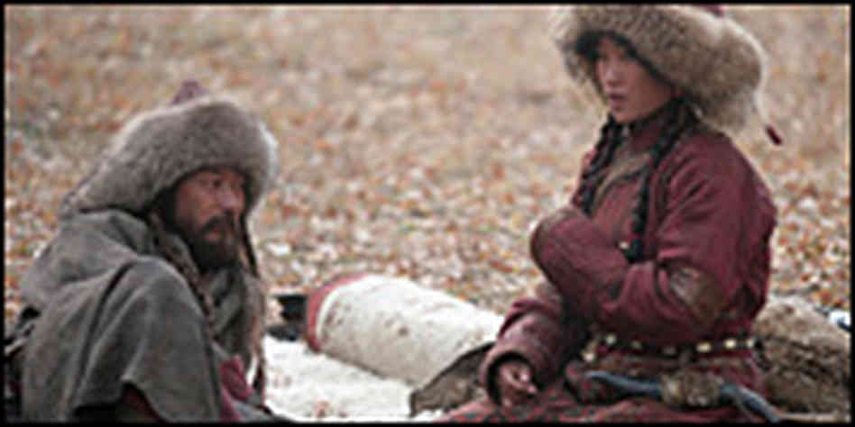
The Yasak also forbade child soldiers and slavery (or at the very least the slavery of other Mongols). He also specifically prohibited discrimination based on religion. This was true, even if you were from Tibet, or a Muslim! In fact it was one of the first known legal codes that allowed its citizens religious freedom.
![The Mongols had a new Khan, Genghis Khan (also Cinggis Khan), born in 1167 by the more simple name of Temügin. By 1206, he had defeated all his rivals and when they all attended upon him to pay homage, he had a surprise for them. Illiterate himself, he wanted a consolidated Mongolian state and he knew that this meant law. So he asked his advisor Tatatungo to come up with the Yasak, a code of law to maintain the peace and order amongst his citizens. Also known as the Great Law of Genghis Khan, no copy of the Yasak has survived. Indeed, it was only reluctantly that Genghis Khan even tolerated a basic form of script language, and only to allow for a basic administration of his Mongolian dominions. The Yasak was unique in that it did not pretend to derive its authority from divine revelation, as has Hammurabi’s Code, as well as Jewish and Islamic law.](../assets/img/the-role-of-women-under-the-leadership-of-genghis-khan/SNAG-X0222.jpg)
It was a pretty remarkable document until you get to the stuff about cutting horse thieves in two with a sword and holding marriage celebrations for dead children. You know, other more contemporaneous punishments and activities.
So much for progressive thought.
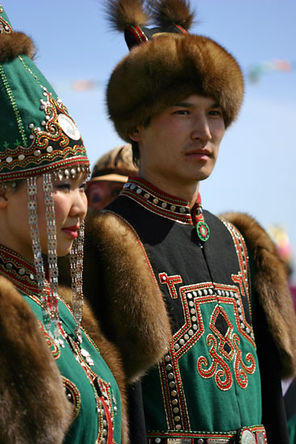
Anyways, ol’ Genghis Khan was quite the fellow, and he really wanted to make good in the (now decimated) lands that he conquered. Because of this, and the history of his people, the women of Mongolia are what they are today.
I am an American Structural Engineer and spent approximately 1-1/2 years working in Mongolia, and living in UB. I have since moved on to another project in Cape Town, SA, however wanted to comment on perhaps the most accurate article I have read in relation to Mongolian women. I have additionally worked in several other Asian counties to include Singapore, Hong Kong, China, etc. I hope that you will agree that you cannot even “basically” compare the contemporary Mongolian woman to any other Asians. BTW, forget the “Asian Height Charts by Country” seen all over the internet – not even close. For example, China, S. Korean and even Japanese women are calculated taller in stature than Mongolian ladies – Not eve close! When I strolled through Sukhbaatar Square on warm days, it was not uncommon for me to see several Mongolian women 5′7″, 5′8″ even up to 5′10″. What stands out just as much, is that these ladies have shapes and many pronounced bust-lines; mainly due to diet (meat/dairy). They appear physically to be much stronger built than other Asians. The best way I can explain it, Mongolian women have physical shapes closer to Russian women than they do other Asians. Another distinguishing factor, many Chinese, Japanese women have very small hands and feet – not Mongolian women who have larger hands/feet. Consider this, for a country of just over 3 million people, Nearly 50% of all top Asian fashion models are from Mongolia. Battsetseg Turbat for example has been in many famous American commercials to include Budweiser and Apple. This is what surprised me most when I first stepped off the plane upon my arrival to UB. Mongolian women’s height can be deceiving when viewing online photos – the reason is that they have voluptuous shapes to accompany their height. An additional quality is personality. Mongolian women have big personalities, laugh loudly and not afraid to approach someone they may wish to meet. Additionally, Mongolian women when affronted, do not shy away as do other Asians, however will meet the confrontation head-on 100%. What I have also noticed, when in other parts of Asia, women will almost always give way when an American woman is walking down the sidewalk toward them. Not in UB – A Mongolian woman will expect the American woman to step aside most every time. In relation to toughness, Mongolia are second to none. In fact, Mongolian women have very little respect for American women, thinking them soft and spoiled (their words not mine). All Mongolian women are excellent horsemen, whether raised in the Ger District or city. They are like the land they inhabit, resilient and everlasting. I remember taking a walk around Sukhbaatar Square with a Mongolian lady I befriended to just enjoy the day . It was in November last year and nearly freezing. I remember she was wearing heels, barely covered up and seemed fine. I was layered to the hilt, still shivering although looked like the Michelin tire man with all my garb. She must have noticed I was freezing as suggested we walk to Millie’s Espresso to have lunch, drink something warm and relax. These women impressed me as they were able to balance their hardiness with their femininity. You are correct, there is a slight mix of Slav in most Mongolian ladies, however, does not distract from their Asian appearance. I do not know if I will ever return to Mongolia, however, the Mongolian ladies will have my respect and admiration for life. -Life Around Asia
Conclusion
The women who lived under the rule of Genghis Khan were strong, independent women that well understood their role, their niche and their lifestyle. They are who they are because they come from a traditional conservative culture where they must implement K-reproductive strategies. I believe that the success of the Mongol “hordes” wouldn’t be possible were it not for the strong support of the women-folk riding side by side with their husbands.
At that I will conclude this adventure into the women of Mongolia.
Posts Regarding Life and Contentment
Here are some other similar posts on this venue. If you enjoyed this post, you might like these posts as well. These posts tend to discuss growing up in America. Often, I like to compare my life in America with the society within communist China. As there are some really stark differences between the two.
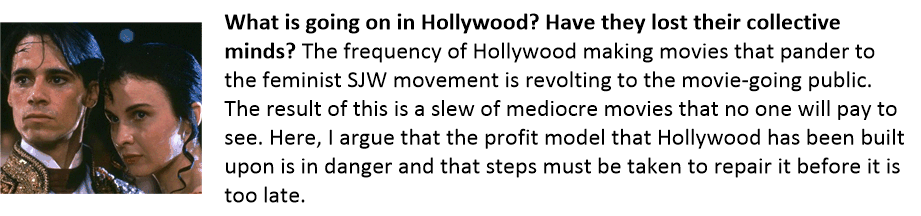


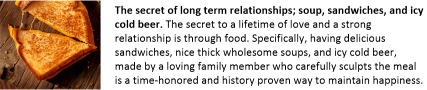


More Posts about Life
I have broken apart some other posts. They can best be classified about ones actions as they contribute to happiness and life. They are a little different, in subtle ways.
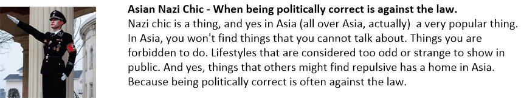


Funny Pictures
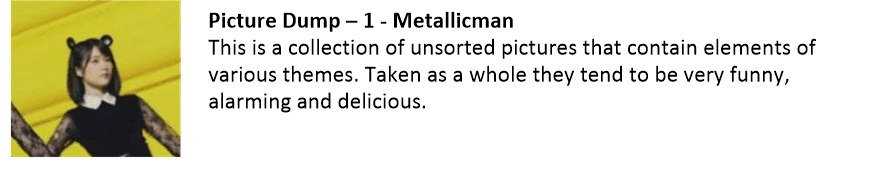
Be the Rufus – Tales of Everyday Heroism.
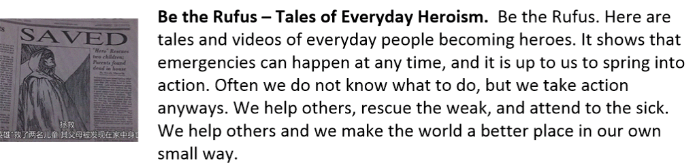